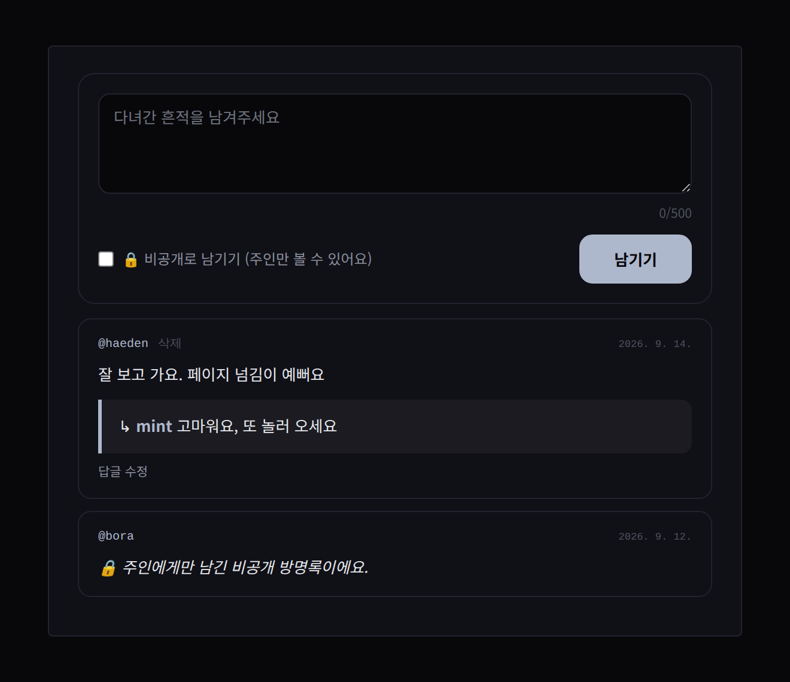

러브인포 · 꾸미기
방명록
방명록은 블록입니다. 원하는 페이지에 ＋방명록으로 놓으면 목록과 작성폼이 그 자리에 들어가요.
- luvinfo.me에서 로그인한 멤버만 남길 수 있고, @핸들 서명과 홈 링크가 자동으로 붙습니다. 비로그인·서브도메인 방문자는 목록만.
- 🔒 비공개 글 — 주인과 작성자만 볼 수 있어요.
- ↳ 주인 답글 — 인라인으로 달고 수정, 비우면 삭제.
- 삭제는 주인 또는 작성자 본인. 글은 500자.
- 내 홈에 새 글이 오면 알려줘요.
- 안쪽 카드 색은 홈의 투명도 설정을 따라갑니다.

사진 자리img/li-guestbook.png